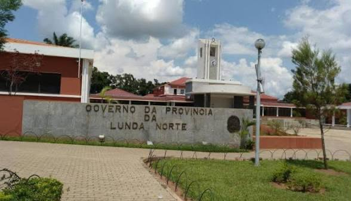

Dundo
99.197 km²
Cokwe e Português
A Lunda Norte é uma província localizada no nordeste de Angola, conhecida pela sua riqueza mineral, especialmente os diamantes, e pela forte herança cultural dos povos Lunda e Cokwe.